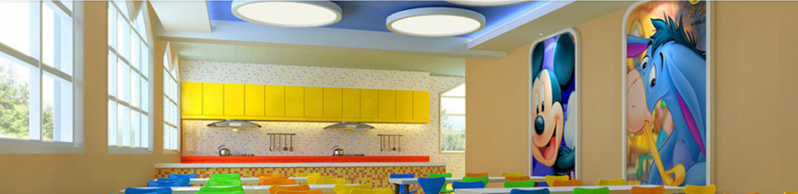

放心食堂Assured Canteen
幼儿的膳食工作在幼儿园整体工作中占有非常重要的位置。大多数幼儿家长在为自己宝宝选择幼儿园的时候，不仅注重幼儿园教育教学，设备设施，整体环境，还特别关心幼儿在园内的膳食情况。在幼儿园，食堂管理必须规范，因为孩子们的一日三餐都在食堂，一定要做到让孩子满意、让家长放心。

我们本着卫生、安全、富有营养、利于消化的总要求，每周为幼儿制定营养食谱，做到品种多样，荤素搭配合理并保证按量供给。为了提高伙食质量，我们在菜肴的搭配、 烹饪上下功夫， 保证幼儿各类营养素摄取均衡。同时我们还将一日食谱向家长公示，让家长了解孩子在园的用餐情况，定期有保健医生、营养员巡视幼儿进餐情况，了解食物是否符 合幼儿的口味，发现问题及时改正。 在饮食卫生方面，我们有自己的生态养殖场和种植园，以及严格的供应商管理制度和统一采购、统一配送的管理方式，严格把控采购、验收关。食堂内都配备了先进的设备，食堂工作人员每天都要完成清洗、操作、消毒等必须工作，并对餐具要做到"一用一消毒"。食堂工作人员都要持有效的健康证，并且每年都要到局医院进行定期体检，工作期间要按要求穿戴好工作衣帽，保持个人卫生。
幼儿园饮食安全是一项长期性的工作，常抓不懈，努力提高食堂服务质量和服务水平，为幼儿的健康饮食做好保障，让孩子满意，让家长放心。
幼儿园预约试听
| 宝宝姓名： | |
| 联系电话： | |
| 选择省份： | |
| 选择区县： | |
| 选择园所： | |
| 试听时间： | |
| 验证码： |

|